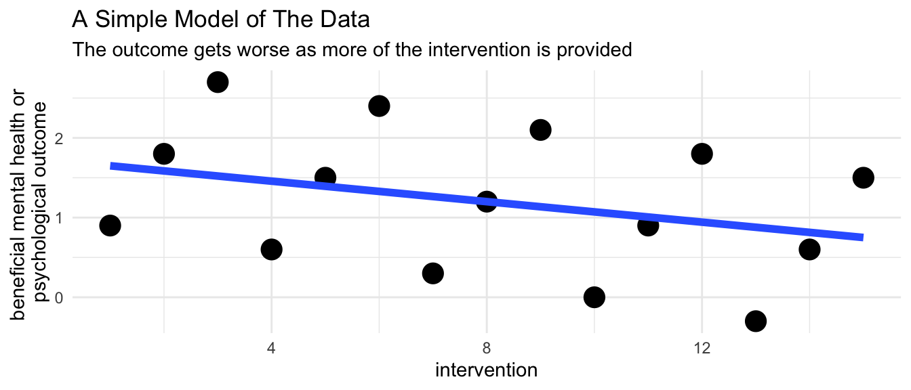

Be Less Wrong
Why Use Quantitative Methods?
Across the globe, there are definite concrete realities of abuse, neglect, suffering, exploitation, violence, discrimination, and other associated problems that we are trying to understand, and to reduce.
We hope that our research will inform efforts to change these realities. However, we must be aware that our understanding of the world is at best iterative and contingent. While we will never have a perfect understanding of the social world, we can always better our understanding, and move toward being less wrong.
As Silverman (1998) wrote:
This reminds us of the famous saying by the statistician George Box about statistical models (Hand, 2014):
Thus, an important reason for using quantitative methods is to try to be iteratively less wrong in the discoveries we are making about social issues.
Let’s consider a simple visual model based upon some simulated data. Two key variables in this model are the intervention (a treatment or program that we hope does some good), and the outcome (an improved or beneficial mental health or psychological outcome).
Here is a first model. What do these results say about the relationship of the intervention and the outcome?
These simple straightforward results suggest that the intervention is associated with a worsening of the outcome.
Let’s now consider a slightly more complex model. In addition to examining the intervention and the outcome, we account for the fact that individuals come from different groups. This could be any kind of group, e.g. a racial, ethnic, religious, cultural, or economic group.
Our conclusion seems to have flipped!
The Intervention is Recommended
Based upon these results we would recommend using this intervention.
The fact that statistical results–and analogously visual results–can flip when more variables are accounted for is known as Simpson’s Paradox (Simpson, 1951).1
Adding more variables will not always flip our conclusions.
We need to include as many variables as we can in our visual and statistical models.
Failure to include all of the relevant variables in our model–whether that model is visual or statistical–may lead to very wrong conclusions.
At first the scenario I’ve just presented seems almost like a trick, or a puzzle, designed to confound us, or to illustrate a convoluted statistical scenario. Yet, upon reflection, the scenario I’ve just presented is surprisingly plausible.
My point? Simple models feel intuitive and have a commonsense appeal. Yet, with even slightly complicated social issues, simple models may be wrong. 2\(^,\) 3\(^,\) 4
What I have illustrated here is only one set of ideas about how we need to complicate our quantitative thinking to try to be a little less wrong in thinking about social problems.
Other more advanced statistical techniques may be seen as attempts to deal with other complications of the data, in an effort to be less wrong.
“What we see and how we see is of course determined by our perspective, by the place from which we begin our examination of history; but it is determined also by reality itself.” (Martín-Baró, 1994)
“… there is no way to know when our observations about complex events in nature are complete. Our knowledge is finite, Karl Popper emphasised, but our ignorance is infinite. … [W]e can never be certain about the consequences of our interventions, we can only narrow the area of uncertainty. This admission is not as pessimistic as it sounds: claims that resist repeated energetic challenges often turn out to be quite reliable. Such ‘working truths’ are the building blocks for the reasonably solid structures that support our everyday actions…” (Silverman, 1998)
“In general, when building statistical models, we must not forget that the aim is to understand something about the real world. Or predict, choose an action, make a decision, summarize evidence, and so on, but always about the real world, not an abstract mathematical world: our models are not the reality—a point well made by George Box in his oft-cited remark that ‘all models are wrong, but some are useful’ (Box, 1979 in Launer & Wilkinson (1979)).” (Hand, 2014)
“All models are wrong, but some are useful.” (Box, 1979)
flowchart LR classDef yellow fill:#FFC20E,stroke:#000000,stroke-width:2px,color:#000000; classDef blue fill:#374EA2,stroke:#000000,stroke-width:2px,color:#FFFFFF; classDef green fill:#00833D,stroke:#000000,stroke-width:2px,color:#FFFFFF; classDef orange fill:#D86018,stroke:#000000,stroke-width:2px,color:#FFFFFF; classDef red fill:#9A3324,stroke:#000000,stroke-width:2px,color:#FFFFFF; intervention(intervention) --> outcome(outcome)

The Intervention is Not Recommended
Based upon these results we would not recommend using this intervention.
flowchart LR classDef yellow fill:#FFC20E,stroke:#000000,stroke-width:2px,color:#000000; classDef blue fill:#374EA2,stroke:#000000,stroke-width:2px,color:#FFFFFF; classDef green fill:#00833D,stroke:#000000,stroke-width:2px,color:#FFFFFF; classDef orange fill:#D86018,stroke:#000000,stroke-width:2px,color:#FFFFFF; classDef red fill:#9A3324,stroke:#000000,stroke-width:2px,color:#FFFFFF; intervention(intervention) --> outcome(outcome) group(group) --> outcome(outcome)

Simpson’s Paradox
Put briefly, and intuitively, our evidence based “story” can change–sometimes quite dramatically–as we add more and more factors to our model.
Multivariate Processes
Frequently, adding additional variables means that an original conclusion that we thought was substantively or statistically significant is no longer significant. This is an aspect of multivariate processes where an outcome is influenced by multiple factors.
A Strategy for Modeling
If those variables are observed, and included in our data set, it may be straightforward to build them into our model. If those variables are not observed, and not present in our data set, more complicated modeling strategies may be necessary.
A Thought Experiment
Imagine a situation in which an intervention is administered based upon the situation in a local community. Quite possibly, the intervention might be provided at higher levels in communities where outcomes are less good. At the same time the intervention might be beneficial to individuals. Such a scenario would present us with exactly the data that we see reflected in Figure 2 and Figure 3.

Be Less Wrong
We need to keep the model as simple as possible so that it remains a useful abstraction, but to make the model complicated enough to reflect the complications of reality.
References
Box, G. (1979). Robustness in the strategy of scientific model building. In R. L. Launer & G. N. Wilkinson (Eds.), Robustness in statistics. Academic Press, Inc. [Harcourt Brace Jovanovich, Publishers], New York-London.
Button, K. S., Ioannidis, J. P. A., Mokrysz, C., Nosek, B. A., Flint, J., Robinson, E. S. J., & Munafò, M. R. (2013). Power failure: Why small sample size undermines the reliability of neuroscience. Nature Reviews Neuroscience, 14, 365–376. https://doi.org/10.1038/nrn3475
Diez Roux, A. (2003). Potentialities and limitations of multilevel analysis in public health and epidemiology. In D. Courgeau (Ed.), Methodology and epistemology of multilevel analysis: Approaches from different social sciences (pp. 93–119). Kluwer Academic Publishers.
Elwert, F., & Winship, C. (2014). Endogenous selection bias: The problem of conditioning on a collider variable. Annual Review of Sociology, 40, 31–53. https://doi.org/10.1146/annurev-soc-071913-043455
Gelman, A., Shor, B., Bafumi, J., & Park, D. (2007). Rich state, poor state, red state, blue state: What’s the matter with Connecticut? Quarterly Journal of Political Science, 2, 345–367. https://doi.org/10.2139/ssrn.1010426
Hand, D. J. (2014). Wonderful Examples, but Let’s not Close Our Eyes. Statistical Science, 29(1), 98–100. https://doi.org/10.1214/13-STS446
Launer, R. L., & Wilkinson, G. N. (1979). Robustness in statistics. In R. L. Launer & G. N. Wilkinson (Eds.), Proceedings of a Workshop held at the Army Research Office, Research Triangle Park, N.C., April 11–12, 1978 (p. xvi+296). Academic Press, Inc. [Harcourt Brace Jovanovich, Publishers], New York-London.
Martín-Baró, I. (1994). Toward a liberation psychology. In A. Aron & S. Corne (Eds.), Writings for a liberation psychology. Harvard University Press.
Nieuwenhuis, R. (2015). Association, aggregation, and paradoxes: On the positive correlation between fertility and women’s employment. Demographic Research, 32. https://www.demographic-research.org/volumes/vol32/23/
Silverman, W. A. (1998). Non-replication of the replicable (1996). In Where’s the evidence? Debates in modern medicine. Oxford University Press.
Simpson, E. H. (1951). The interpretation of interaction in contingency tables. Journal of the Royal Statistical Society. Series B (Methodological), 13, 238–241. http://www.jstor.org/stable/2984065
Westreich, D., & Greenland, S. (2013). The table 2 fallacy: Presenting and interpreting confounder and modifier coefficients. American Journal of Epidemiology, 177, 292–298. https://doi.org/10.1093/aje/kws412
Footnotes
An analogous process can occur with multilevel data, in which there are often many groups, such as many schools, many neighborhoods, or many countries. Failure to account for the grouping of the data–in schools, neighborhoods or countries–can sometimes lead to dramatically incorrect results (Diez Roux, 2003; Gelman et al., 2007; Nieuwenhuis, 2015).↩︎
Since developing this tutorial, I’ve been reminded in some conversations about additional issues. For example, in this tutorial, I’m arguing for including as many control variables as possible. However, for some social issues, only small samples are available. Such small samples may be statistically underpowered, and may not have sufficient sample size to include many different control variables.↩︎
Additionally, since developing this tutorial, I’ve also been reminded that one must be careful and thoughtful about choosing control variables. As a simple example, consider a hypothetical situation in which \(x\) is a cause of \(y\): \(x \rightarrow y\). If \(m\) is a mediator of the relationship between \(x\) and \(y\), then including \(m\) in one’s statistical model changes the meaning of the estimate of \(x\). \(\beta_x\) is now an estimate of the direct effect of \(x\) on \(y\), accounting for the presence of \(m\). There may be an indirect effect of \(x\) on \(y\) through \(m\) (\(x \rightarrow m \rightarrow\) y) that needs to be accounted for using special procedures (CF Westreich & Greenland, 2013). Including a control variable \(c\) that is a function of both \(x\) and \(y\) (\(x \rightarrow c \ \& \ y \rightarrow\) c) may introduce additional complications (Elwert & Winship, 2014).↩︎
Further, one could argue, somewhat convincingly, that an RCT (randomized controlled trial) would solve the major issue inspiring this presentation. By randomly assigning study participants to a treatment and control group, we would avoid the possibility that our results could be statistically confounded by other factors, and thus avoid the possibility that our results would flip or substantially change as we add more variables to the model. First, it is important to remember that there are many social issues that cannot be ethically studied with random assignment. Second, what is not often enough acknowledged is that RCT’s are often based upon small clinically available or conveniently available samples that may not generalize well to other populations or people. Lastly, also not often enough acknowledged, is that the smaller samples often used in RCT’s are more likely to generate false positives than larger samples (Button et al., 2013). Large observational studies with diverse populations–and models with many appropriate control variables–certainly have their role.↩︎